<!-- OVERWORLD LANDSCAPE QUALITY — 2026-08-03. Plates: tools/ow_probe/land.js + ow_multi.mjs.
     Measurements: tools/ow_probe/imgstat.py. Nothing on this page ships. -->
<meta charset="utf-8"><title>ow-valley — the landscape</title>
<style>
 :root{--bg:#12141a;--fg:#e8e6e1;--dim:#9aa0aa;--line:#2a2e38;--up:#7fd18c;--dn:#e0806e;--acc:#d9a441;--ref:#8fb4e8}
 *{box-sizing:border-box}
 body{margin:0;background:var(--bg);color:var(--fg);font:15px/1.55 -apple-system,BlinkMacSystemFont,"Segoe UI",sans-serif}
 header{padding:28px 32px 20px;border-bottom:1px solid var(--line);max-width:1560px;margin:0 auto}
 h1{margin:0 0 6px;font-size:26px;letter-spacing:-.01em}
 .sub{color:var(--dim);max-width:86ch}
 main{max-width:1560px;margin:0 auto;padding:0 32px 90px}
 .bands{margin:22px 0 0;padding:16px 18px;border:1px solid var(--line);border-radius:8px;background:#171a21}
 .bands pre{margin:0;white-space:pre-wrap;font:12.5px/1.5 ui-monospace,SFMono-Regular,Menlo,monospace;color:#c9cdd6;overflow-x:auto}
 h2.sec{margin:54px 0 4px;font-size:22px;padding-top:26px;border-top:1px solid var(--line)}
 h3{margin:30px 0 2px;font-size:18px}
 h3 .tag{font-size:11px;letter-spacing:.08em;text-transform:uppercase;color:var(--acc);border:1px solid var(--acc);border-radius:3px;padding:2px 6px;margin-left:10px;vertical-align:2px}
 h3 .tag.cost{color:var(--up);border-color:var(--up)}
 h3 .tag.spend{color:var(--dn);border-color:var(--dn)}
 .desc{color:var(--dim);font-size:13.5px;max-width:96ch;margin:0 0 14px}
 .row{display:grid;grid-template-columns:repeat(2,1fr);gap:12px;margin:14px 0 0}
 .row.w3{grid-template-columns:repeat(3,1fr)}
 .pane{min-width:0;margin:0}
 .pane figcaption{font:12px/1.4 ui-monospace,Menlo,monospace;color:var(--dim);padding:7px 2px}
 .pane img{width:100%;height:auto;display:block;border-radius:5px;background:#000;border:1px solid var(--line)}
 .pane.is-before img{border-color:var(--dn)} .pane.is-before figcaption{color:var(--dn)}
 .pane.is-ref img{border-color:var(--ref)} .pane.is-ref figcaption{color:var(--ref)}
 .why{margin:14px 0 0;padding:12px 14px;background:#171a21;border-left:3px solid var(--line);border-radius:0 6px 6px 0;font-size:13.5px;color:#c4c9d2;max-width:106ch}
 .why b{color:var(--fg)}
 .why.gap{border-left-color:var(--dn)}
 table.sum{width:100%;border-collapse:collapse;margin:22px 0 10px;font:12.5px/1.45 ui-monospace,Menlo,monospace}
 table.sum th,table.sum td{padding:6px 9px;border-bottom:1px solid var(--line);text-align:left;vertical-align:top}
 table.sum th{color:var(--dim);font-weight:600}
 table.sum td.n{text-align:right;white-space:nowrap}
 table.sum tr.refrow td{color:var(--ref)}
 table.sum tr.beforerow td{color:var(--dn)}
 td.up{color:var(--up)} td.dn{color:var(--dn)}
 .note{color:var(--dim);font-size:13px;max-width:100ch}
 mark{background:none;color:var(--acc)}
 @media (max-width:1100px){.row,.row.w3{grid-template-columns:1fr}}
 @media (prefers-color-scheme:light){:root{--bg:#faf9f7;--fg:#1a1d23;--dim:#5c626c;--line:#e0dfdb;--up:#1f7a37;--dn:#a8331b;--acc:#9a6b12;--ref:#245ea8}
  .bands,.why{background:#f1efec}}
 :root[data-theme="light"]{--bg:#faf9f7;--fg:#1a1d23;--dim:#5c626c;--line:#e0dfdb;--up:#1f7a37;--dn:#a8331b;--acc:#9a6b12;--ref:#245ea8}
 :root[data-theme="light"] .bands,:root[data-theme="light"] .why{background:#f1efec}
 :root[data-theme="dark"]{--bg:#12141a;--fg:#e8e6e1;--dim:#9aa0aa;--line:#2a2e38;--up:#7fd18c;--dn:#e0806e;--acc:#d9a441;--ref:#8fb4e8}
 :root[data-theme="dark"] .bands,:root[data-theme="dark"] .why{background:#171a21}
</style>

<header>
<h1>ow&#8209;valley &mdash; the landscape</h1>
<p class="sub"><strong>The forest probe missed, and this page starts by saying why.</strong> F1/F2/F3 all worked at
the level of <em>&ldquo;make the trees more varied&rdquo;</em>. <mark>The reference frames contain no forest at
all</mark> &mdash; so what they are pointing at was never a tree&#8209;species problem. It is whole&#8209;landscape:
light, air, ground detail and blended transitions. Everything below is diagnosed and judged at that level.
<br><br><strong>These are AAA renders from a professional studio and this is a prototype. Parity is not on offer
and nothing here claims it.</strong> What is on offer is the two or three techniques that close the most perceived
distance for the least work, each measured, each with the gap it does <em>not</em> close stated in the same
breath. <mark>Nothing on this page ships</mark>: the bundle, the map files and <code>play3d.html</code> are
untouched; every candidate is injected into the live runtime over CDP and photographed.</p>
</header>

<main>

<h2 class="sec">The bar, in words, before any of ours</h2>
<div class="row w3">
 <figure class="pane is-ref">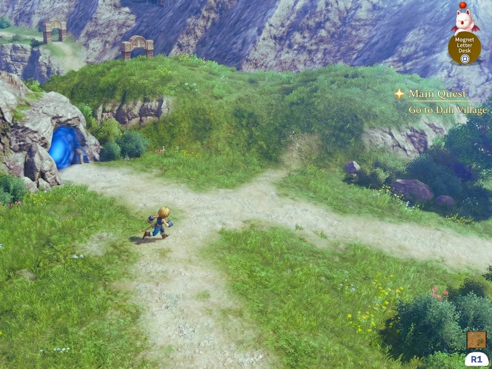<figcaption>REFERENCE 1 &middot; the Dali cliff, day</figcaption></figure>
 <figure class="pane is-ref">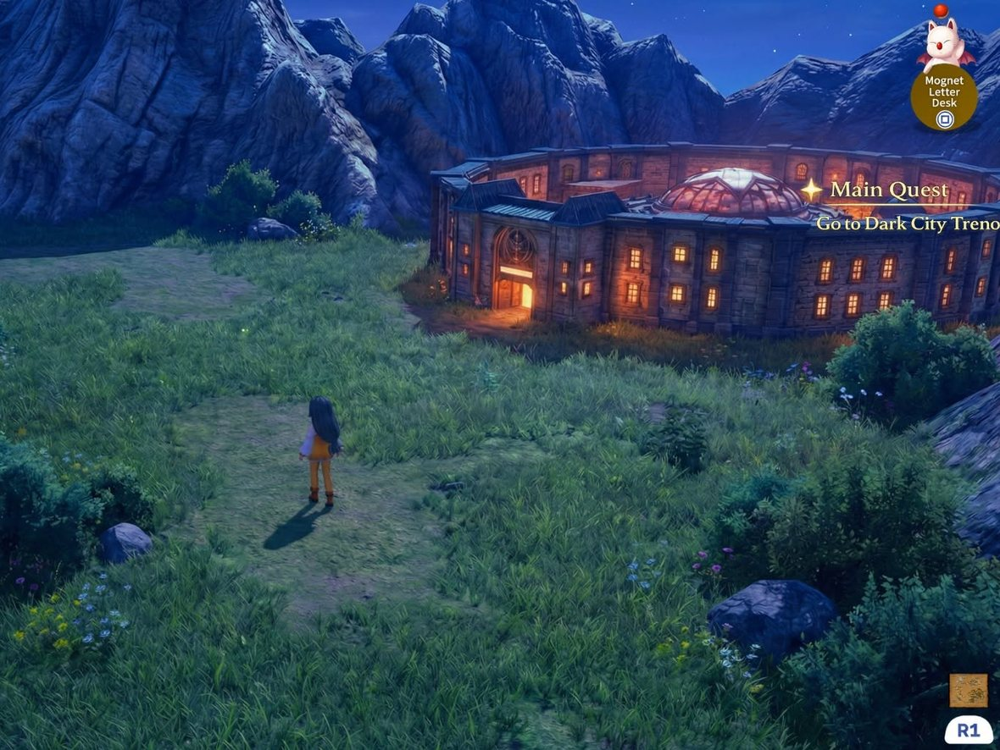<figcaption>REFERENCE 2 &middot; outside Treno, night</figcaption></figure>
 <figure class="pane is-ref">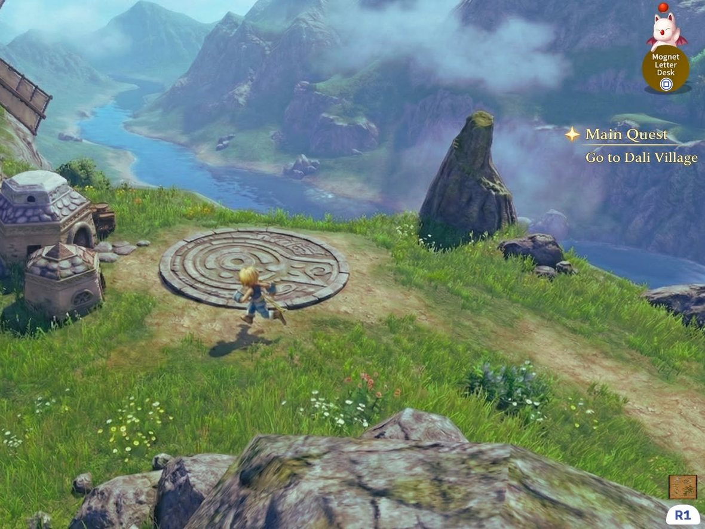<figcaption>REFERENCE 3 &middot; the windmill vista</figcaption></figure>
</div>
<div class="why"><b>REFERENCE 1 &mdash; a cliff&#8209;top meadow with a worn path, a cave mouth in a pale outcrop, sea
and headlands behind.</b> The ground is grass GEOMETRY: blades break the outline at the ridge, at the rock's foot
and along the path, and a few clumps stand <em>on</em> the path itself. Nowhere is there a hard edge &mdash; the
worn earth is encroached on by grass, loose stones bridge grass to rock, plants grow out of the rock's cracks.
Vegetation is clustered at three scales (dark foreground bushes bottom&#8209;left and bottom&#8209;right, mid
shrubs around the outcrop, a green haze on the far headland) with white / yellow / pink flowers in patches of five
to ten, never evenly spread. The rock has vertical fracture and horizontal bedding and a real range of tone.
<b>And the light is doing most of the work:</b> lit grass is a bright yellow&#8209;green, shadowed grass is a deep
BLUE&#8209;green &mdash; a hue shift, not just a darker version of the same colour &mdash; and the character sits
in a clean pool of contact shadow.<br><br>
<b>REFERENCE 2 &mdash; night, so almost all of it is one dark blue&#8209;green field.</b> The whole picture is
carried by <em>one</em> hue contrast: warm orange windows against a wholly cool landscape, with a clean soft cast
shadow under the character. Grass still silhouettes. Bushes cluster at the cliff base, along the left edge and at
the building's foot &mdash; there is no bare junction anywhere between a built thing and the ground.<br><br>
<b>REFERENCE 3 &mdash; the one that is almost entirely ATMOSPHERE.</b> Near meadow saturated yellow&#8209;green,
mid valley pale sage, far mountains near&#8209;white blue, with fog physically banked in the valley. Depth is
carried by haze, not by size. A big luminous sky is a third of the frame, a dark rock and tall grass frame the
bottom, and daisies sit in patches. Nothing in it is a better asset than ours &mdash; it is better <em>staged</em>
and better <em>lit</em>.<br><br>
<b>The through&#8209;line across all three (and across the two town frames and the Dagger portrait too):</b> one
strong key, a real value range top to bottom, and a WARM&#8209;LIGHT / COOL&#8209;SHADOW split. That is the thing
they all share and it is the thing we do not have.</div>

<h2 class="sec">The diagnosis, measured &mdash; and it is not about trees</h2>
<p class="desc">Instrument: <code>tools/ow_probe/imgstat.py</code>, on crops that exclude every HUD pixel.
L&nbsp;=&nbsp;Rec.709 luma of the sRGB frame. <em>detail</em> = mean |laplacian| of L, x1000 &mdash; pixel&#8209;scale
texture. <em>b&minus;r</em> is measured separately over the darkest and the brightest quartile: positive means
BLUE, negative means warm.</p>

<table class="sum">
<tr><th>frame</th><th class="n">L05</th><th class="n">L50</th><th class="n">L95</th><th class="n">sat50</th><th class="n">b&minus;r dark</th><th class="n">b&minus;r lit</th><th class="n">detail</th><th class="n">1&#8209;hue mass</th></tr>
<tr class="refrow"><td>REF 1 &middot; Dali, day</td><td class="n">0.298</td><td class="n">0.541</td><td class="n">0.799</td><td class="n">0.352</td><td class="n">+0.090</td><td class="n">&minus;0.040</td><td class="n">48.1</td><td class="n">0.425</td></tr>
<tr class="refrow"><td>REF 3 &middot; windmill, day</td><td class="n">0.270</td><td class="n">0.477</td><td class="n">0.696</td><td class="n">0.380</td><td class="n">+0.033</td><td class="n">+0.110</td><td class="n">29.7</td><td class="n">0.316</td></tr>
<tr class="refrow"><td>REF 2 &middot; Treno, <b>NIGHT</b></td><td class="n">0.093</td><td class="n">0.245</td><td class="n">0.423</td><td class="n">0.557</td><td class="n">+0.234</td><td class="n">+0.151</td><td class="n">45.9</td><td class="n">0.339</td></tr>
<tr class="beforerow"><td>ours &middot; Emberbrook gate</td><td class="n">0.094</td><td class="n">0.363</td><td class="n">0.536</td><td class="n">0.613</td><td class="n">&minus;0.104</td><td class="n">&minus;0.364</td><td class="n">44.4</td><td class="n">0.588</td></tr>
<tr class="beforerow"><td>ours &middot; shelf, boom 12</td><td class="n">0.108</td><td class="n">0.204</td><td class="n">0.384</td><td class="n">0.594</td><td class="n">&minus;0.087</td><td class="n">&minus;0.258</td><td class="n">19.3</td><td class="n">0.494</td></tr>
<tr class="beforerow"><td>ours &middot; shelf, boom 40</td><td class="n">0.074</td><td class="n">0.236</td><td class="n">0.418</td><td class="n">0.553</td><td class="n">&minus;0.058</td><td class="n">&minus;0.246</td><td class="n">34.1</td><td class="n">0.427</td></tr>
<tr class="beforerow"><td>ours &middot; Dellhollow approach</td><td class="n">0.072</td><td class="n">0.243</td><td class="n">0.429</td><td class="n">0.562</td><td class="n">&minus;0.059</td><td class="n">&minus;0.273</td><td class="n">25.3</td><td class="n">0.399</td></tr>
</table>

<div class="bands"><pre>THREE FINDINGS, AND NOT ONE OF THEM IS ABOUT AN ASSET.

1. THERE IS NO LIGHT IN THE CORRIDOR.  Three of our four DAYLIGHT cameras are
   darker than the reference's NIGHT plate (L50 0.204 / 0.236 / 0.243 against
   Treno's 0.245).  And NOTHING anywhere in any of our frames is brighter than
   0.536, where both daylight references put 5 % of the frame above 0.70.  We
   have no highlight at all — no lit ground, no sky, no bright rock.  The frame
   has a floor and a ceiling and they are 0.07 apart from each other.

2. NOTHING IN THE CORRIDOR IS COOL.  b−r is NEGATIVE in both the dark and the
   light quartile of every one of our four frames.  Reference 1's shadows measure
   +0.090 — actually blue.  Ours are −0.06 to −0.10: brown, only darker.  A
   shadow that is the same hue as its lit surface is a multiply layer, and that
   reads as a rendering trick rather than as a place.  It is also why 40-59 % of
   our coloured pixels sit in ONE 30-degree hue bin against the references' 32-43.

3. THE GROUND HAS A THIRD OF THE REFERENCE'S PIXEL-SCALE DETAIL.  detail 19.3 at
   walking closeness against 29.7-48.1.  That is the "flat tinted plane" — the
   thing asked about twice — as a number.

AND THE ALBEDO AGREES, read out of the live bundle's own COLOR_0:
     ground_valley_1  grass   L 0.383    rgb 0.356 0.403 0.260   (G−R = +0.047)
     ground_valley_3  rock    L 0.502    rgb 0.519 0.505 0.420
  THE GRASS IS DARKER THAN THE ROCK.  The largest bright surface in this corridor
  is a brown cliff.  In every one of the six references the largest bright
  surface is LIT GROUND.  That single inversion is most of why our frames read
  brown and theirs read green.

WHAT IS *NOT* WRONG, so it does not get chased again: the sun angle (ratified, and
the towns' own key transformed), the shadow pass (working — see §4 below for the
one surface it was told to skip), the tree count, and the region's triangle budget
(150,528 for 280 x 200 u; the corridor is not under-modelled).</pre></div>

<h2 class="sec">Before &mdash; the four cameras</h2>
<p class="desc">The first probe's own four: the Emberbrook gate at boom&nbsp;16, the gorge shelf at walking
closeness (boom&nbsp;12), the shelf at the shipped follow camera (boom&nbsp;40) and the Dellhollow approach
(boom&nbsp;40). <strong>These are the &ldquo;before&rdquo; in every row below</strong>, re&#8209;rendered at this
page's frame size so every number on the page is comparable to every other.</p>
<div class="row">
 <figure class="pane is-before"><figcaption>BEFORE &middot; Emberbrook gate &middot; boom 16</figcaption></figure>
 <figure class="pane is-before">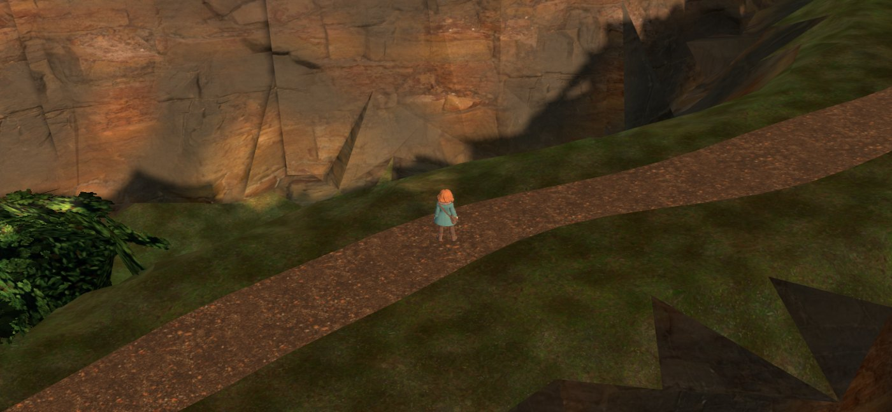<figcaption>BEFORE &middot; gorge shelf &middot; boom 12</figcaption></figure>
</div>
<div class="row">
 <figure class="pane is-before">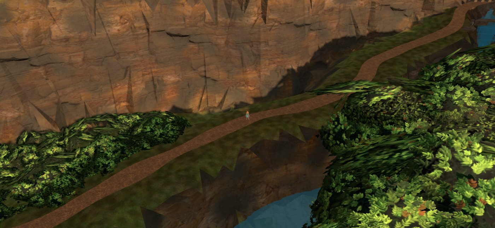<figcaption>BEFORE &middot; gorge shelf &middot; boom 40 (SHIPPED CAMERA)</figcaption></figure>
 <figure class="pane is-before">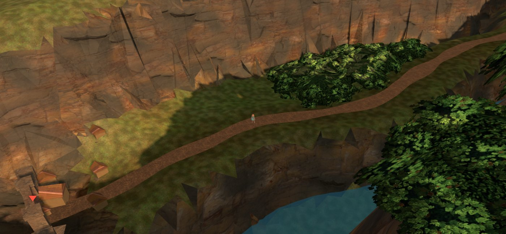<figcaption>BEFORE &middot; Dellhollow approach &middot; boom 40</figcaption></figure>
</div>
<div class="why"><b>What I see.</b> At the gate, a tan plateau meets a green meadow along a <em>jagged vector
polygon</em> and the road crosses both as a flat brown ribbon with a cut edge on each side; nothing on the ground
is taller than the paint. On the shelf at boom&nbsp;12 the grass is a low&#8209;frequency olive smear with faint
streaks in it, and the whole frame &mdash; cliff, road, grass &mdash; sits inside one narrow brown band. At
boom&nbsp;40 the picture is a brown wall, an olive ribbon and a cyan river, and the far rock is exactly as
saturated as the near rock, so the gorge has no depth. On the Dellhollow approach the meadow at left is a single
unbroken tan&#8209;olive gradient the size of a third of the frame. <b>In all four: no sky, no haze, no highlight,
and every boundary is a cut.</b></div>

<h2 class="sec">L1 &mdash; THE HOUR <span class="tag cost">+0 triangles</span></h2>
<p class="desc"><strong>Light, air, and the shadow side.</strong> The key is NOT touched &mdash; its angle and
colour are the towns' ratified golden hour and this lane does not get to re&#8209;decide them. What changes is
everything the key does not reach. The fill is raised and made properly blue, and raised on the HEMISPHERE rather
than the ambient, because a hemisphere is directional and keeps the top&#8209;to&#8209;bottom gradient that gives a
solid its form &mdash; flat ambient is exactly the &ldquo;1.70 of omnidirectional fill&rdquo; mistake the light
lane already paid for. One dim cool shadowless bounce comes in from roughly opposite the sun, the second thing
every reference has that we do not: a shadowed vertical face that is not flat. And the fog is brought in from
150&nbsp;m to 34&nbsp;m &mdash; <mark>the shipped fog starts at 150&nbsp;m, and the walked corridor is 172&nbsp;m
end to end, so nothing the player ever looks at inside the valley is far enough away to be touched by it</mark>.
It reaches only the vista ring beyond the map, which the play camera never sees (&sect;5).</p>
<div class="row">
 <figure class="pane is-before"><figcaption>BEFORE &middot; shelf boom 12</figcaption></figure>
 <figure class="pane">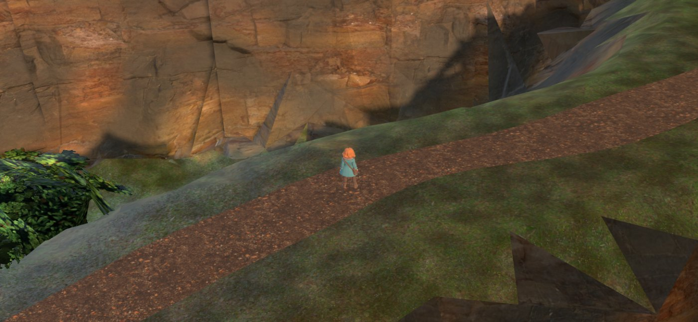<figcaption>L1 &middot; shelf boom 12</figcaption></figure>
</div>
<div class="row">
 <figure class="pane is-before"><figcaption>BEFORE &middot; shelf boom 40</figcaption></figure>
 <figure class="pane">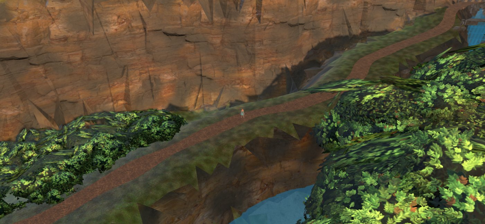<figcaption>L1 &middot; shelf boom 40</figcaption></figure>
</div>
<div class="row">
 <figure class="pane is-before"><figcaption>BEFORE &middot; gate</figcaption></figure>
 <figure class="pane">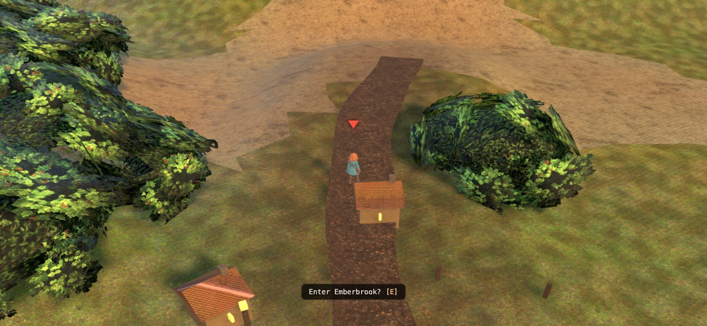<figcaption>L1 &middot; gate</figcaption></figure>
</div>
<div class="why"><b>What I see.</b> The shadowed half of every frame stops being a hole. On the shelf the ground
inside the cliff's shadow goes from a dead brown&#8209;black to a readable cool blue&#8209;green, and you can now
tell that it is grass in shadow rather than an unlit patch; the cliff's own shadowed face picks up a gradient
instead of one value. At boom&nbsp;40 the far end of the gorge takes a faint haze and the frame gains depth it did
not have. <b>The whole picture is also flatter in contrast and less saturated</b> &mdash; that is the honest cost
of raising fill, and it is why L1 wants L3 next to it.<br><br>
<b>Measured.</b> L05 (the darkest twentieth of the frame &mdash; i.e. the shadows) <code>0.094&#8594;0.150</code>
at the gate, <code>0.108&#8594;0.154</code> at boom&nbsp;12, <code>0.072&#8594;0.146</code> on the Dellhollow
approach: <strong>a doubling of the value in the darkest part of every frame.</strong> L50 up 15&ndash;30&nbsp;%.
Saturation down (0.59&#8594;0.44) and <em>detail</em> essentially unchanged &mdash; light cannot invent texture.<br><br>
<b>What this deliberately does NOT do.</b> It adds no filmic tone curve. That was already tried and looked at
(<code>docs/qa/charlight/tone-ow-{off,aces,agx}.png</code>) and the finding stands: at exposure&nbsp;1.0 both AgX
and ACES take the meadow to khaki and the river to grey&#8209;teal, because this palette is direct albedo under a
key solved in linear. <em>The fault in these frames was never the curve. It is the fill.</em></div>

<h2 class="sec">L2 &mdash; THE GROUND IS GEOMETRY <span class="tag spend">+113,924 triangles</span></h2>
<p class="desc"><strong>Detail placed only where it makes an edge.</strong> The reference's grass reads as grass
because blades break the SILHOUETTE &mdash; against sky at a ridge, against rock at a cliff foot, against worn
earth at a path edge. It is not a carpet, and a carpet is what the first probe's A1 was and what was refused. So
<mark>the placement rule IS the candidate</mark>: a tuft is emitted only where the ground CHANGES, at a density
falling off over ~2.6&nbsp;m, and nowhere else. That answers three complaints in one pass &mdash; no scale cue on
the ground, hard vector transitions, and vegetation that is not clustered at multiple scales. Three scales are
built: 17,837 six&#8209;triangle blade tufts at the seams, 261 shrub clumps at rock feet, and 841 flowers in
<em>89 patches</em> (a patch of six to fourteen, never an even scatter &mdash; that difference is the whole trick
and it costs nothing to obey).</p>
<div class="row">
 <figure class="pane is-before"><figcaption>BEFORE &middot; shelf boom 12</figcaption></figure>
 <figure class="pane">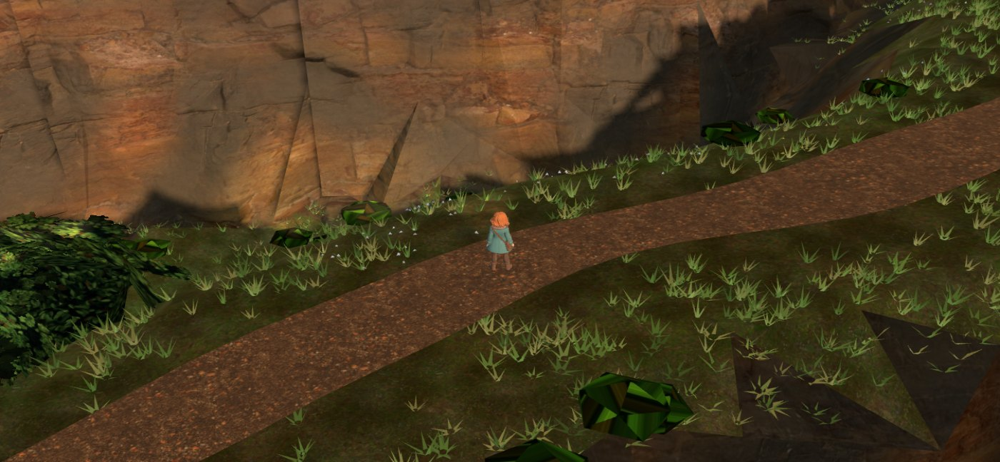<figcaption>L2 &middot; shelf boom 12</figcaption></figure>
</div>
<div class="row">
 <figure class="pane is-before"><figcaption>BEFORE &middot; gate (the hard grass&#8594;sand cut)</figcaption></figure>
 <figure class="pane">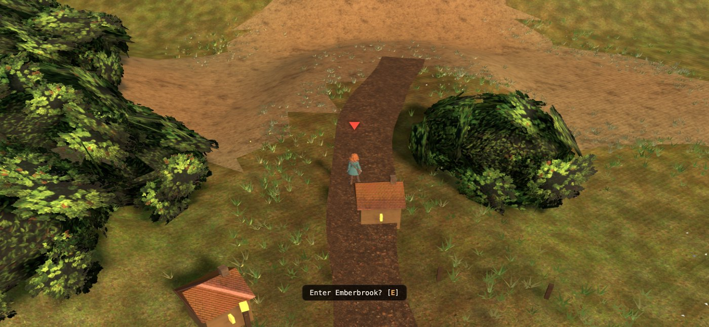<figcaption>L2 &middot; gate</figcaption></figure>
</div>
<div class="row">
 <figure class="pane is-before"><figcaption>BEFORE &middot; Dellhollow approach</figcaption></figure>
 <figure class="pane">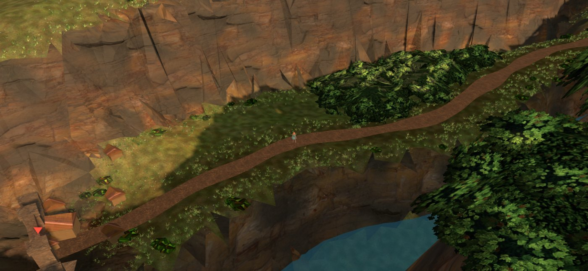<figcaption>L2 &middot; Dellhollow approach</figcaption></figure>
</div>
<div class="why"><b>What I see.</b> At boom&nbsp;12 the road stops being a decal: its edge is now a ragged fringe of
grass leaning over worn earth, with a scatter of white flower heads in the verge beside the character, and the
ground has a scale you can read the body against. At the gate the tan/green polygon boundary is broken by tufts
standing on both sides of it, so the plateau reads as dry ground the meadow is thinning into rather than as a
paint splotch. On the Dellhollow approach the shelf reads as a grassy ledge above the gorge.<br><br>
<b>Measured.</b> <em>detail</em> <code>19.3&#8594;33.2</code> at boom&nbsp;12 (<strong>+72&nbsp;%</strong>, which
takes us past reference&nbsp;3's 29.7), <code>25.3&#8594;33.4</code> on the Dellhollow approach,
<code>34.1&#8594;40.6</code> at boom&nbsp;40. L50 and the hue numbers barely move &mdash; <strong>this candidate is
texture and nothing else</strong>, which is exactly why it composes with the other two rather than competing
with them.<br><br>
<b>What it costs and what it is honestly worth.</b> 113,924 triangles is real spending and it is the only
candidate here that spends any. Two things about that number. First, the shipped bundle already carries
<strong>38,740 triangles of meadow scatter and 9,792 of tree trunks that land ZERO triangles within 15&nbsp;m of
the road at all seven sampled points</strong> (first probe's census) &mdash; a third of this is available by
moving budget rather than adding it. Second, a tuft is <strong>six triangles</strong>; the cost is the count, and
the count is a knob. At half density the frames still read and the bill halves.<br><br>
<b>The shapes are stand&#8209;ins and the clumps are the weakest of them</b> &mdash; a squashed icosahedron with a
borrowed bush map still reads as a faceted green gem at close range. Judge the density, the scale against the
1.45&nbsp;u body and the placement rule; not the modelling.</div>

<h2 class="sec">L3 &mdash; THE SURFACE <span class="tag cost">+0 triangles</span></h2>
<p class="desc"><strong>&ldquo;Improve what exists&rdquo; taken literally: the terrain we already have is the
wrong colour and has no variation.</strong> Nothing is added and nothing is moved; only <code>COLOR_0</code>
changes, on the three ground batches. The grass is lifted and greened, because it is currently darker than the
rock. The rock is COOLED and given BEDDING &mdash; a banding in world&nbsp;y, which is what strata is &mdash;
plus a slow tonal drift so that no two faces of one wall share a value. And every vertex near a surface change is
dragged toward the other surface's tone through a <em>noisy</em> threshold, so a seam becomes ragged instead of
vector.</p>
<div class="row">
 <figure class="pane is-before"><figcaption>BEFORE &middot; shelf boom 40</figcaption></figure>
 <figure class="pane">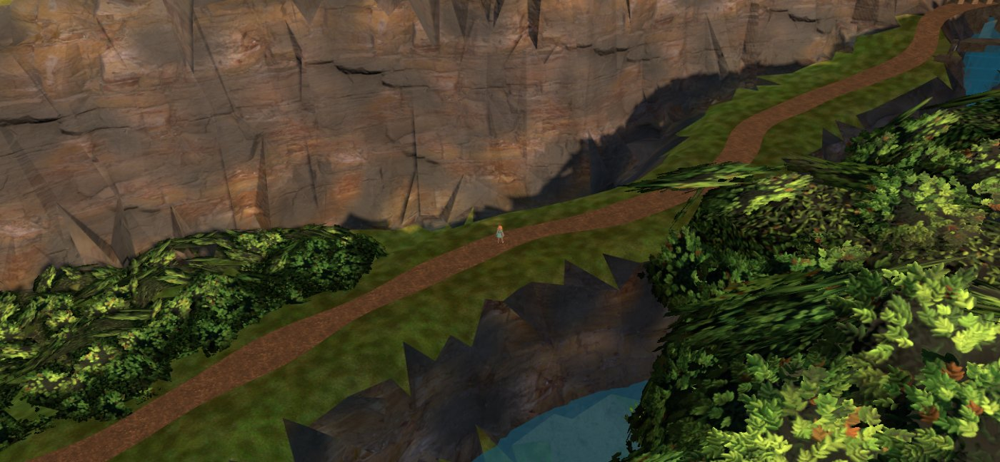<figcaption>L3 &middot; shelf boom 40</figcaption></figure>
</div>
<div class="row">
 <figure class="pane is-before"><figcaption>BEFORE &middot; gate</figcaption></figure>
 <figure class="pane">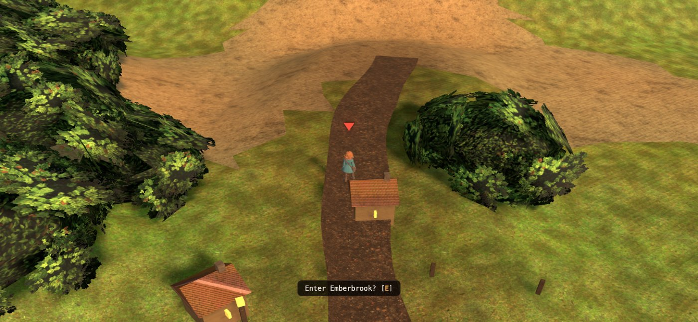<figcaption>L3 &middot; gate</figcaption></figure>
</div>
<div class="row">
 <figure class="pane is-before"><figcaption>BEFORE &middot; Dellhollow approach</figcaption></figure>
 <figure class="pane">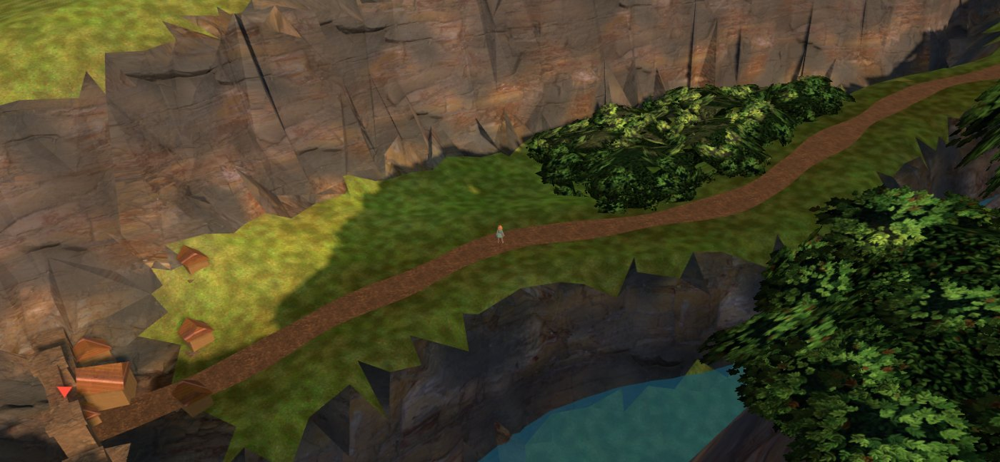<figcaption>L3 &middot; Dellhollow approach</figcaption></figure>
</div>
<div class="why"><b>What I see.</b> The gorge wall stops being the warmest thing in the picture. It goes to a cool
grey&#8209;brown with visible horizontal banding and reads as bedded sandstone rather than as one poured slab, and
because it has cooled, the green shelf in front of it now separates from it instead of blending into it. The
meadow at the gate becomes a real green with patchy variation across it rather than one olive wash, and the tan
plateau warms against it, so the two zones read as two <em>materials</em> even before any tuft is planted.<br><br>
<b>Measured.</b> L50 <code>0.363&#8594;0.428</code> at the gate and <code>0.243&#8594;0.263</code> on the
Dellhollow approach, with Lrange up in both (<code>0.442&#8594;0.517</code> and <code>0.357&#8594;0.404</code>) &mdash;
<strong>it adds contrast rather than spending it</strong>. Shadow warmth <code>b&minus;r&nbsp;dark
&minus;0.058&#8594;&minus;0.031</code> at boom&nbsp;40. One&#8209;hue mass at the gate
<code>0.588&#8594;0.514</code>. <em>detail</em> is flat, as it must be &mdash; there is no new geometry.<br><br>
<b>What this cost to learn.</b> The first pass multiplied the rock's blue channel by 1.10 and <em>the cliff did not
move at all</em>. The brown is in the MAP, and <code>COLOR_0</code> multiplies it, so a 10&nbsp;% push against a
channel that is already the smallest is nothing. A saturating control &mdash; forcing each ground batch to pure
red / green / blue &mdash; proved the plumbing in one frame and located the fault in the amplitude, and the working
number turned out to be <code>r x0.66 / b x1.62</code>. <mark>A null result on a recolour has to be separated from
a broken recolour by an amplitude that cannot be missed</mark>; the forest lane paid for the same lesson last
night and it is worth paying only once.</div>

<h2 class="sec">All three together, beside the reference</h2>
<p class="desc">Not a fourth option &mdash; the three above are orthogonal (light / geometry / surface) and the
numbers show it, so this is simply what they compose to. <strong>Put beside the reference, because the reference
is the bar and the comparison should be visible rather than asserted.</strong></p>
<div class="row w3">
 <figure class="pane is-before"><figcaption>BEFORE &middot; shelf boom 12</figcaption></figure>
 <figure class="pane">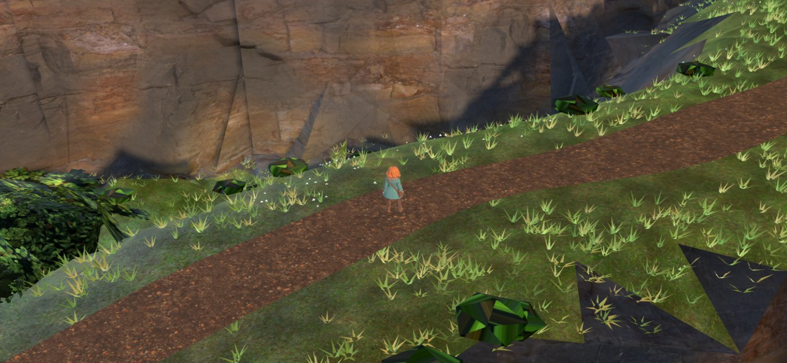<figcaption>L1+L2+L3 &middot; shelf boom 12</figcaption></figure>
 <figure class="pane is-ref"><figcaption>REFERENCE 1 &middot; the bar</figcaption></figure>
</div>
<div class="row w3">
 <figure class="pane is-before"><figcaption>BEFORE &middot; gate</figcaption></figure>
 <figure class="pane">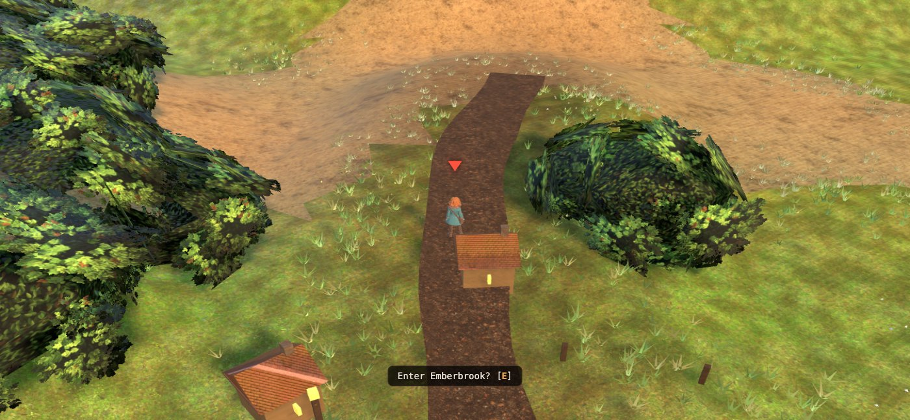<figcaption>L1+L2+L3 &middot; gate</figcaption></figure>
 <figure class="pane is-ref"><figcaption>REFERENCE 3 &middot; the bar</figcaption></figure>
</div>
<div class="row w3">
 <figure class="pane is-before"><figcaption>BEFORE &middot; shelf boom 40</figcaption></figure>
 <figure class="pane">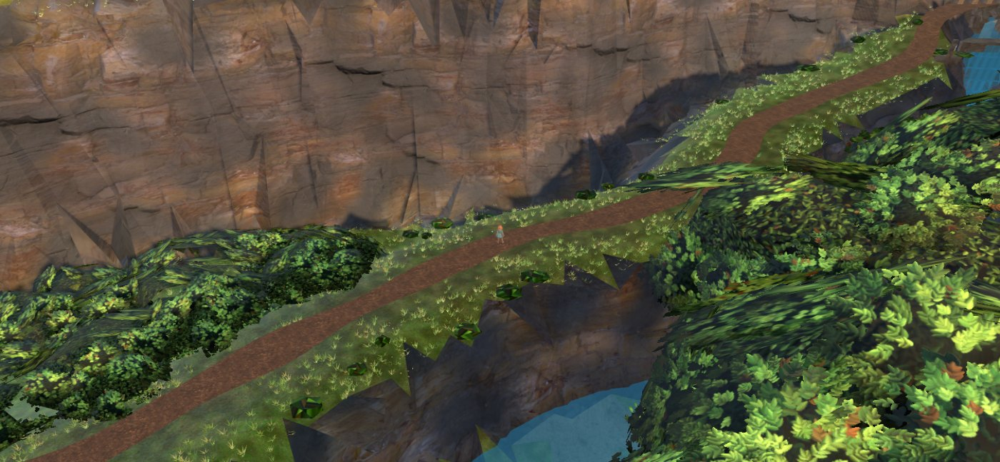<figcaption>L1+L2+L3 &middot; shelf boom 40</figcaption></figure>
 <figure class="pane">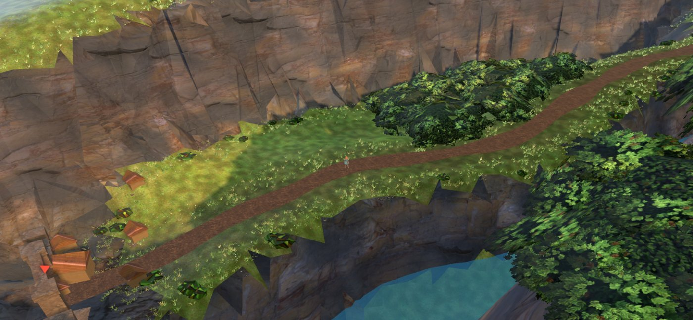<figcaption>L1+L2+L3 &middot; Dellhollow approach</figcaption></figure>
</div>
<div class="why"><b>What I see, honestly, holding it against reference&nbsp;1.</b> We now have the same
<em>structure</em>: a worn path with a grass fringe that overhangs it, a meadow with tonal patches rather than a
tint, a rock face that is cooler than the ground and has bedding in it, flower patches at low density, and shadow
that is a different colour from light rather than a darker version of it.<br><br>
<b>What we do not have &mdash; measured on a patch of sunlit meadow in each frame, not asserted:</b>
<table class="sum" style="margin:8px 0 4px">
<tr><th>sunlit meadow patch</th><th class="n">L p50</th><th class="n">L p90</th><th class="n">mean R &nbsp; G &nbsp; B</th></tr>
<tr class="refrow"><td>REFERENCE 1</td><td class="n">0.603</td><td class="n">0.806</td><td class="n">0.556 &nbsp; 0.647 &nbsp; <b>0.500</b></td></tr>
<tr class="refrow"><td>REFERENCE 3</td><td class="n">0.469</td><td class="n">0.614</td><td class="n">0.450 &nbsp; 0.503 &nbsp; 0.299</td></tr>
<tr class="beforerow"><td>ours, before &middot; gate meadow</td><td class="n">0.364</td><td class="n">0.435</td><td class="n">0.396 &nbsp; 0.351 &nbsp; 0.150</td></tr>
<tr><td>ours, all three &middot; gate meadow</td><td class="n up">0.511</td><td class="n up">0.607</td><td class="n">0.483 &nbsp; 0.509 &nbsp; <b>0.208</b></td></tr>
</table>
<b>Our sunlit meadow now lands on top of reference&nbsp;3's</b> (0.511 / 0.607 against 0.469 / 0.614) and is still
a long way under reference&nbsp;1's 0.603 / 0.806. And the RGB column shows what is left after the value gap
closes: the reference's green carries a <em>blue channel of 0.50</em> and ours carries 0.21. <strong>Theirs is a
green. Ours is still an olive.</strong> Add to that 10&ndash;30&nbsp;% of their frame given to a luminous sky that
our camera angle never sees (&sect;5). At a glance and at gameplay distance the distance has closed a lot; at a
stare it has not. Both are true at once and the page should say so.</div>

<table class="sum">
<tr><th>&nbsp;</th><th class="n">tris</th><th class="n">L05<br>(shadows)</th><th class="n">L50</th><th class="n">L95<br>(highlights)</th><th class="n">sat50</th><th class="n">b&minus;r dark</th><th class="n">detail</th><th class="n">1&#8209;hue mass</th></tr>
<tr class="refrow"><td>REFERENCE 1 &mdash; the bar</td><td class="n">&mdash;</td><td class="n">0.298</td><td class="n">0.541</td><td class="n">0.799</td><td class="n">0.352</td><td class="n">+0.090</td><td class="n">48.1</td><td class="n">0.425</td></tr>
<tr class="beforerow"><td>before &middot; shelf boom 12</td><td class="n">&mdash;</td><td class="n">0.108</td><td class="n">0.204</td><td class="n">0.384</td><td class="n">0.594</td><td class="n">&minus;0.087</td><td class="n">19.3</td><td class="n">0.494</td></tr>
<tr><td>L1 the hour</td><td class="n up">&plusmn;0</td><td class="n up">0.154</td><td class="n up">0.283</td><td class="n">0.414</td><td class="n up">0.443</td><td class="n">&minus;0.080</td><td class="n">23.0</td><td class="n">0.483</td></tr>
<tr><td>L2 ground&#8209;is&#8209;geometry</td><td class="n dn">+113,924</td><td class="n">0.104</td><td class="n">0.223</td><td class="n">0.399</td><td class="n">0.587</td><td class="n">&minus;0.086</td><td class="n up">33.2</td><td class="n up">0.430</td></tr>
<tr><td>L3 the surface</td><td class="n up">&plusmn;0</td><td class="n">0.108</td><td class="n">0.229</td><td class="n">0.375</td><td class="n">0.582</td><td class="n up">&minus;0.063</td><td class="n">20.0</td><td class="n">0.459</td></tr>
<tr><td><b>all three</b></td><td class="n dn">+113,924</td><td class="n up"><b>0.150</b></td><td class="n up"><b>0.314</b></td><td class="n up"><b>0.486</b></td><td class="n up"><b>0.413</b></td><td class="n up"><b>&minus;0.056</b></td><td class="n up"><b>40.7</b></td><td class="n">0.463</td></tr>
</table>
<p class="note">Read the columns, not the rows: <strong>L1 owns L05, L2 owns detail, L3 owns hue and range, and
each barely touches the other two's column.</strong> That is the evidence that these are three levers and not
three settings of one. Same table at the gate camera: L05 0.094&#8594;0.150, L50 0.363&#8594;0.498, detail
44.4&#8594;55.6, one&#8209;hue mass 0.588&#8594;0.384 (reference&nbsp;1 is 0.425).</p>

<h2 class="sec">&sect;4 &mdash; A BUG, not a candidate: <mark>the road never receives a shadow</mark></h2>
<p class="desc">Found while measuring, and it is one regex. <code>play3d.html</code>'s overworld rig walks the
bundle with <code>if(o.isMesh &amp;&amp; !/^(walk|bar_|__ow)/i.test(o.name))</code> and gives everything else
<code>castShadow</code> and <code>receiveShadow</code>. That filter exists to keep the invisible walk&#8209;network
meshes out of the shadow pass &mdash; but in <code>ow&#8209;valley</code> <strong><code>walk_road</code> IS the
visible road ribbon</strong>, and there are five such visible <code>walk_</code> meshes. So the one surface the
player is always standing on is excluded from the light. Both frames below are the shipped bundle under the shipped
rig; the only difference is the flag.</p>
<div class="row">
 <figure class="pane is-before"><figcaption>AS SHIPPED &middot; the road ignores the cliff's shadow</figcaption></figure>
 <figure class="pane">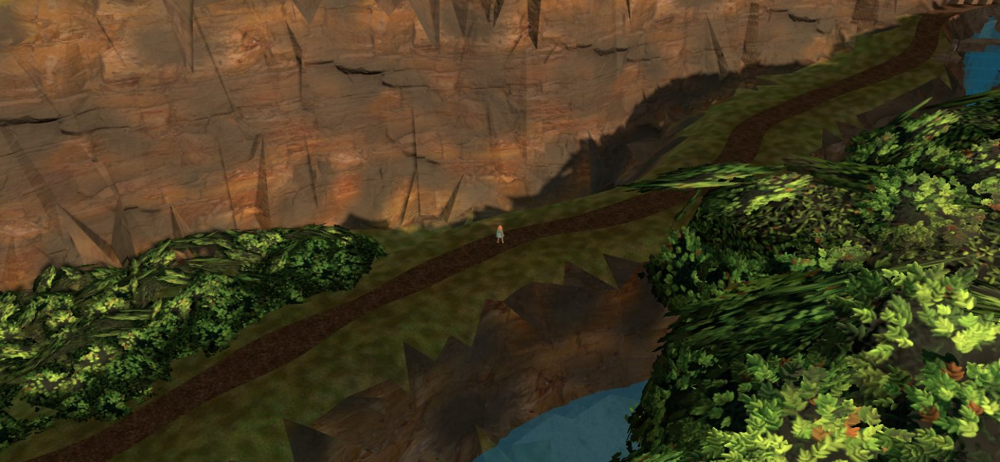<figcaption>receiveShadow = true on the 5 visible walk_ meshes</figcaption></figure>
</div>
<div class="row">
 <figure class="pane is-before"><figcaption>AS SHIPPED &middot; boom 12</figcaption></figure>
 <figure class="pane">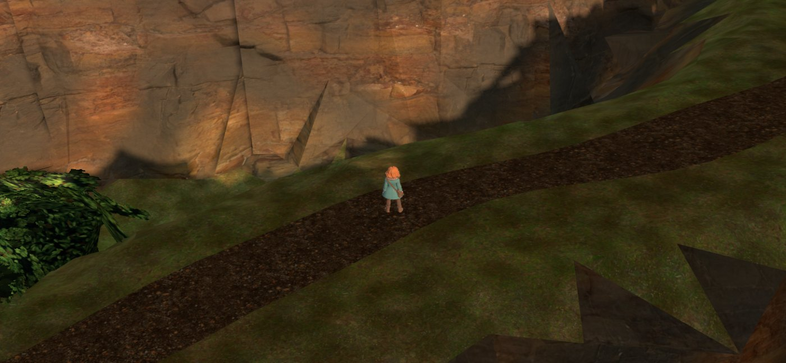<figcaption>with the flag &middot; boom 12</figcaption></figure>
</div>
<div class="why"><b>What I see.</b> In the shipped frame the road runs as a bright ochre stripe straight through
the deep shadow that the gorge wall throws across the grass on both sides of it &mdash; the shadow stops at the
path edge and resumes on the far side. With the flag on, the shadow's edge runs continuously across grass, road and
grass, and at boom&nbsp;12 the character now stands at a light/shade boundary on the path she is walking on.<br><br>
<b>Measured.</b> <strong>15.0&nbsp;% of the boom&#8209;12 frame and 5.0&nbsp;% of the boom&#8209;40 frame move by
more than 8/255</strong>, and the pixels that move go from L&nbsp;0.238 to L&nbsp;0.099 &mdash; they are the road
entering the shadow it was always standing in.<br><br>
<b>This is not mine to change:</b> <code>play3d.html</code> is coordinator&#8209;owned. Flagging it with the A/B
and the number. The fix wants to be narrower than the regex &mdash; something like &ldquo;a <code>walk_</code> mesh
that is VISIBLE in a real&#8209;time region receives (and casts)&rdquo; &mdash; and it should be checked against
the townwalk scenes, which use the same filter.</div>

<h2 class="sec">&sect;5 &mdash; And one thing no candidate can fix: <mark>the camera never sees the sky</mark></h2>
<p class="desc">Every reference frame gives 10&ndash;30&nbsp;% of its picture to sky and haze, and reference&nbsp;3
is carried almost entirely by it. <strong>All four of our cameras contain zero sky pixels.</strong> The follow
camera sits at pitch&nbsp;0.61 / boom&nbsp;40, which points it into the ground; the gradient dome, the three rings
of receding ridge silhouettes and the horizon-matched fog that were built on 2026-08-02 are, in gameplay, invisible.
Below: the same spot at the shipped pitch, at pitch&nbsp;0.26, and at pitch&nbsp;0.26 with L1+L3.</p>
<div class="row w3">
 <figure class="pane is-before">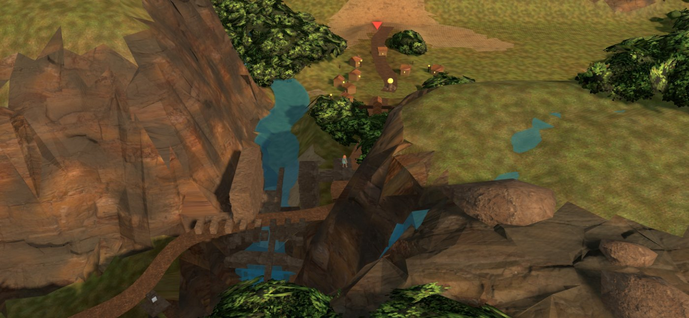<figcaption>SHIPPED &middot; pitch 0.61 &mdash; 0 % sky</figcaption></figure>
 <figure class="pane">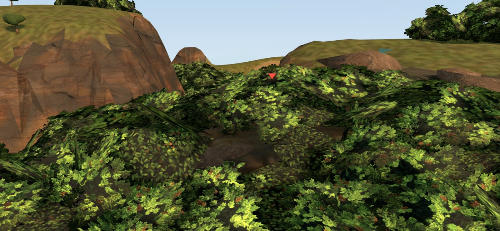<figcaption>pitch 0.26 &mdash; the sky that already exists</figcaption></figure>
 <figure class="pane">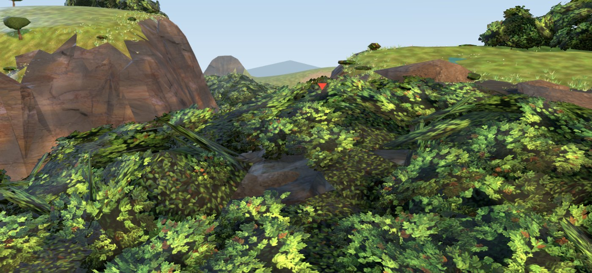<figcaption>pitch 0.26 + L1 + L3 &mdash; and the haze doing its job</figcaption></figure>
</div>
<div class="why"><b>What I see.</b> At pitch 0.26 a pale sky and a distant ridge enter the top fifth of the frame
and the picture acquires a horizon to measure everything else against; with L1's near fog the ridge goes hazy blue
and the valley finally has the near&#8209;mid&#8209;far sandwich that reference&nbsp;3 is built out of.
<b>I am NOT proposing a camera change</b> &mdash; pitch is a gameplay decision about how much ground the player can
read ahead, it belongs to whoever owns the follow camera, and a lower pitch costs legibility of the path. It is
reported because it is the largest single difference between our composition and theirs, and because it means
<strong>work already paid for is currently not visible to anyone</strong>.</div>

<h2 class="sec">What I would do &mdash; and this is mine to reject</h2>
<div class="why">
<b>L3 first, then L1, then L2 at whatever density the frame rate allows. And &sect;4 regardless of all of it.</b>
<br><br>
<b>1. &sect;4 is not a candidate, it is a defect, and it is one line.</b> 15&nbsp;% of a walked frame is wrong today
for free. It should go in whether or not anything else on this page is picked.<br>
<b>2. L3 is the best value on the page.</b> Zero triangles, no new material, no rebuild of anything &mdash; a
recipe in <code>tools/valley_build.py</code> where the terrain COLOR_0 is already written &mdash; and it moves L50,
Lrange, shadow hue and one&#8209;hue mass all at once. It is also the one that fixes the finding I would most
defend: <em>the grass being darker than the rock</em> is why the corridor reads brown, and no amount of light or
grass geometry corrects an inverted albedo.<br>
<b>3. L1 next, because it owns the shadows and nothing else does.</b> L05 doubles in all four frames. Its cost is
that it flattens contrast and desaturates, which is exactly the hole L3 fills &mdash; that is why I would take them
as a pair rather than choose between them. It is a change to <code>play3d.html</code>'s ow rig, so it is a
coordinator edit, and it is worth saying plainly that <strong>this re-opens a lane that was declared closed</strong>.
I re-opened it because all six reference images are, first and foremost, pictures of light.<br>
<b>4. L2 last, and it is the only one I would stage.</b> It is the only candidate that adds volume, and adding
volume is the thing that was refused &mdash; I am putting it forward anyway because the specific complaint
(&ldquo;the ground is a painted plane&rdquo;, asked twice) cannot be answered without geometry, and because
<em>detail</em> is the one measured column that light and colour cannot move. But it is a knob: half the density
still reads, and the first tranche should be the road verge alone, which is the ground the player actually looks
at.<br><br>
<b>WHAT REMAINS OUT OF REACH, stated plainly.</b>
<ul style="margin:6px 0 0 0;padding-left:20px">
<li><b>The highlight.</b> Our best frame reaches L95 0.675 against reference&nbsp;1's 0.799, and our sunlit meadow
p90 0.607 against its 0.806. Closing that needs a tone curve that lifts without desaturating &mdash; a
graded&#8209;renderer decision, and the naive filmic curves were already measured and rejected &mdash; plus a sky
in frame.</li>
<li><b>A green rather than an olive.</b> Even after L3 the meadow's blue channel is 0.21 against the
reference's 0.50. That is the same fault as the shadow one, at the albedo instead of the light.</li>
<li><b>Truly blue shadows.</b> b&minus;r dark improves from &minus;0.087 to &minus;0.056 but never reaches
reference&nbsp;1's +0.090. It cannot, while the terrain's own maps are brown at source: <code>COLOR_0</code>
multiplies a warm texture and can only make it less warm. Genuinely blue shade needs the terrain <em>textures</em>
re-authored cooler, which is an art pass, not a probe.</li>
<li><b>Rock strata as GEOMETRY.</b> L3 gives the cliff tonal bedding; it does not give it the reference's ledges,
overhangs and fracture relief. Those are modelled, and modelling a 60&nbsp;m gorge wall properly is its own
tranche.</li>
<li><b>Grass at reference density.</b> Reference&nbsp;1's meadow is thousands of blades per square metre with
alpha cards and wind. Ours is six triangles per tuft at seams only. It is the right STRUCTURE at a fraction of
the density, and it will always be legible as such at a stare.</li>
<li><b>The character's contact shadow.</b> Every reference puts a clean soft pool under its character. Ours has
one, but it is a 2048&#8209;texel map spread over 230&nbsp;m; it is soft because it is low&#8209;resolution, not
because it is a good shadow. A small second cascade around the body would fix it and is not in this probe.</li>
</ul></div>

<h2 class="sec">Method, and the two traps this lane paid for</h2>
<p class="note">Every plate is a real frame from the shipped runtime at
<code>?scene=ow-valley&amp;rt=1&amp;owsky=1&amp;owlight=1</code>, captured over CDP by
<code>tools/ow_probe/land.js</code> through <code>tools/ow_probe/ow_multi.mjs</code> &mdash; one Chrome launch, 32
frames. Blender was deliberately not used: <code>ow-valley</code> renders in real time under play3d's own rig, so
a Blender still would be a picture of a different lighting model. Numbers are
<code>tools/ow_probe/imgstat.py</code>. The bundle, the map files and <code>play3d.html</code> were not modified.</p>
<div class="bands"><pre>1. r128 FRUSTUM-CULLS AN InstancedMesh AGAINST THE BASE GEOMETRY'S BOUNDING
   SPHERE, transformed by the OBJECT's matrixWorld — the per-instance matrices
   are not in it.  A scatter batch whose base form is a 0.15 m tuft at the origin
   is therefore culled from every camera that cannot see world (0,0,0), and
   28,347 tufts rendered as EXACTLY NOTHING while every count in the report was
   correct.  Two rounds were spent raising the density of something that was
   being drawn perfectly and thrown away.  A REPORT THAT SAYS "28,347 PLACED" AND
   A FRAME THAT SHOWS NONE IS A CULLING BUG, NEVER A PLACEMENT BUG.
   frustumCulled = false, or give the batch a real bounding sphere.

2. r128 SILENTLY DROPS instanceColor WHEN material.vertexColors IS FALSE.
   color_fragment only applies vColor under USE_COLOR, and USE_COLOR comes from
   material.vertexColors — so instance colours vanish.  Set vertexColors:true and
   the geometry must ALSO carry a color attribute, or the missing attribute reads
   as zero and every instance renders black.  An all-ones COLOR_0 on the base
   form plus vertexColors:true is the only combination that is right.

3. THE SLOPE GATE IS NOT OPTIONAL for seam-driven scatter.  The seam test fires
   HARDEST exactly where grass meets vertical rock, so the first L2 grew grass
   straight out of 60 m of gorge wall.  Reject on the local gradient of the
   terrain sampler, not on the zone.

4. SCALE IS AGAINST THE BODY.  Vesper is 1.45 u.  The first tufts were 0.4-1.0 u
   and the shelf grew a hedge of black agave; the reference's grass is ankle-to-
   shin on its character, so 0.10-0.34.  And an instance colour is a multiplier
   ON THE MAP'S OWN MEAN, not on 1.0: ow_valley_bushcore ships COLOR_0 at L 0.311,
   so tinting a clump at 0.5-0.8 produced faceted BLACK BOULDERS at every rock
   foot.  x2.4 puts it back in the band the shipped bush masses occupy.

INHERITED AND STILL TRUE: three r128 has no input colour management (an injected
hex renders chalk without convertSRGBToLinear, and values read back OUT of
COLOR_0 are already linear); SIM.tp(x,z) raycasts from the CURRENT P.y; the
terrain and vegetation meshes are UNINDEXED; and no instrument can derive a road
heading from the RLE-ordered zone raster — nothing here needs one, the road is
used only as a MASK.</pre></div>

<p class="note" style="margin-top:30px">Related: <a href="../ow-art/index.html">the first art probe</a> (the
corridor is undressed &mdash; measured) and <a href="../ow-forest/index.html">the forest probe</a> (why every tree
is the same tree). B1 glass river shipped in <code>896ec23</code> and is in every frame on this page.</p>

</main>
